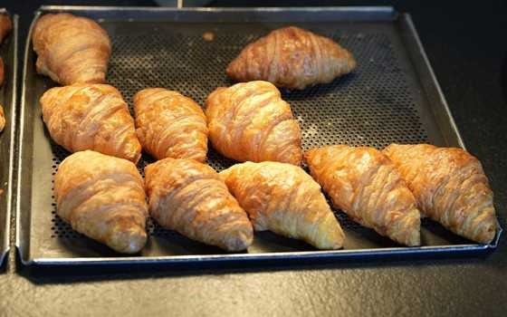
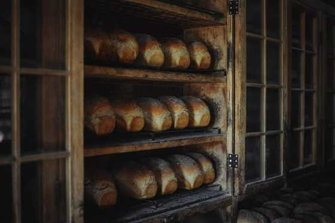
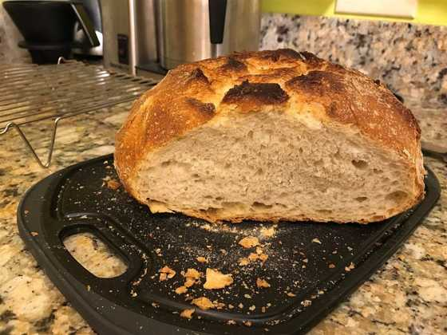
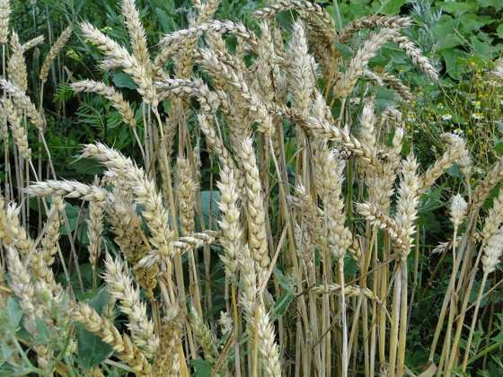
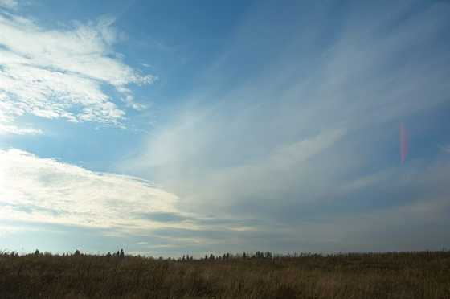

Pain et Sucre
Pain et Sucreパン エ シュクレ ・ 千葉県流山市青田
パンとお菓子で、ひとときの幸せを。
焼きたてのパンを手に取る、小さな楽しみの時間をお届けするパン屋さんです。

Story
お店の由来・想い
公式サイトには、お店は「パンやお菓子を通して、皆様の幸せなひとときのお役にたてれば…そんな思いのパン屋さん」と紹介されています。
- イベント販売を重ねながら実店舗を目指し、2022年10月に千葉県柏市(豊四季台)で店舗をオープン。
- 流山青田店は、青田のユイノハナテラス内にあるお店です(公式サイトより)。
- 店名の「Pain et Sucre」はフランス語で「パンと砂糖」の意。パンとお菓子の両方を大切にする姿勢が、この名前から感じられます(店名の由来そのものは確認できていません。制作側のイメージです)。

イメージ写真(ドイツ)
Breads & Sweets
パンとお菓子
公式サイト・Instagramで確認できた商品の種類です。日々の品揃え、価格、営業時間などは 準備中 です。写真はすべてイメージです。

ハード系・バゲット
バゲットなど、ハード系のパン。

甘いパン・しょっぱいパン
クロワッサン、ブリオッシュなど。

サンド・デニッシュ
サンドやデニッシュも並びます。
流山青田店では、2026年2月からランチメニューも始まっています(公式サイトより。内容は 準備中)。

パンも、お菓子も、小麦や粉、バターから。毎日のごはんにも、ちょっとしたご褒美にも寄り添う一品を。





Voice
口コミ
イメージ例
ふらっと寄ったら、焼きたての香りに誘われてつい多めに買ってしまいました。
イメージ例
クロワッサンのさくさく感が楽しみで、休みの日のお楽しみになりそうです。
イメージ例
パンもお菓子も選ぶのが楽しくて、家族へのおみやげにもぴったりでした。
※ 制作側が作成したイメージ例で、実在のお客様の声ではありません。
Access
アクセス・ご案内
- 店名
- Pain et Sucre パン エ シュクレ(流山青田店)
- 住所
- 千葉県流山市青田140
- 電話
- 準備中
- 営業時間
- 準備中
- 定休日
- 水曜日(公式投稿より。最新情報は公式でご確認ください)
- @sucre_staff_hibi